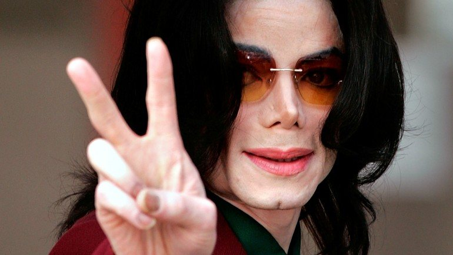

Michael Joseph Jackson foi cantor, compositor e bailarino.

Rei do pop
linha do tempo
1958 - Nasce Michael Jackson, quinto filho do casal Joe e Katharine Jackson, no dia 29 de agosto em Gary, no estado americano de Indiana.
1962 - Joe Jackson segue seu sonho de transformar seus filhos em astros do pop. Os irmãos Tito, Jermaine e Jackie são os primeiros a integrar o grupo The Jackson Brothers.
1963 - Michael Jackson mostra seus talentos precoces e passa a integrar o grupo musical dos irmãos.
1964 - Os cinco irmãos do Jackson 5 são ovacionados em apresentação em um clube de gueto em Gary, sua cidade natal.
1966 - Michael Jackson passa a ser vocalista do Jackson 5.
1967 - O primeiro single do Jackson 5, Big Boy, é lançado pelo selo Steeltown.
O Jackson 5 vence uma competição de bandas em Nova York.
1968 - O Jackson 5 assina um acordo com o selo Motown, de Detroit.
1969 - Em outubro, o single I Want You Back é lançado e faz grande sucesso pelo mundo.
O álbum Diana Ross presents The Jackson 5 é lançado em dezembro.
1970 - Os Jackson 5 experimentam o sabor da fama quando as canções I Want You Back e ABC atingem o primeiro lugar absoluto das paradas americanas. O feito se repetiria no mesmo ano mais duas vezes, com The Love You Save e I´ll Be There.
1971 - Michael Jackson lança seu primeiro disco solo, Got to Be There, junto com um single de mesmo nome.
1972 - O disco Ben, outro solo de Michael Jackson, é lançado. O single de mesmo nome chega ao primeiro lugar das paradas americanas.
1973 - Lançamento do disco Music and Me.
1975 - A Motown aproveita o último ano de contrato com o fenômeno Michael Jackson e lança o disco Forever, Michael.
1976 - O Jackson 5 recebe uma proposta irrecusável da Epic Records. Com a mudança de selo, o grupo ganha novo nome, The Jackson´s.
1977 - Michael Jackson se muda para a casa de Diana Ross. No mesmo ano eles estrelam o filme The Wiz – O Mágico Inesquecível, refilmagem de O Mágico de Oz somente com atores negros.
1978 - The Jackson lança os sucessos Shake Your Body e Blame it on the Boogie. O disco Destiny chega às lojas.